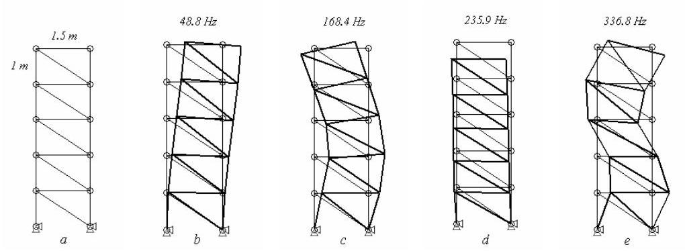
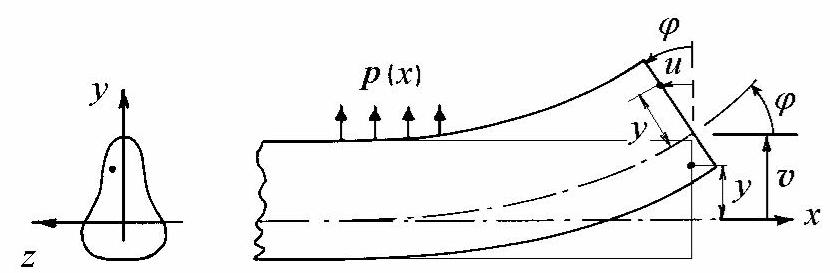
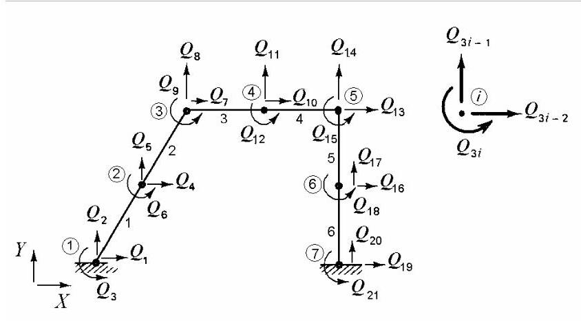
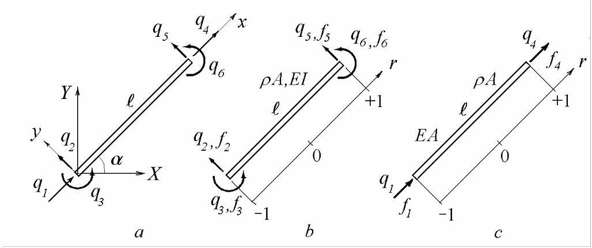
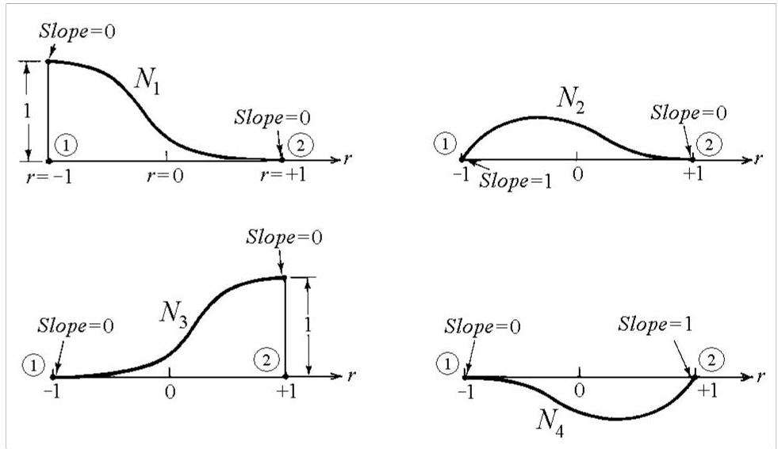
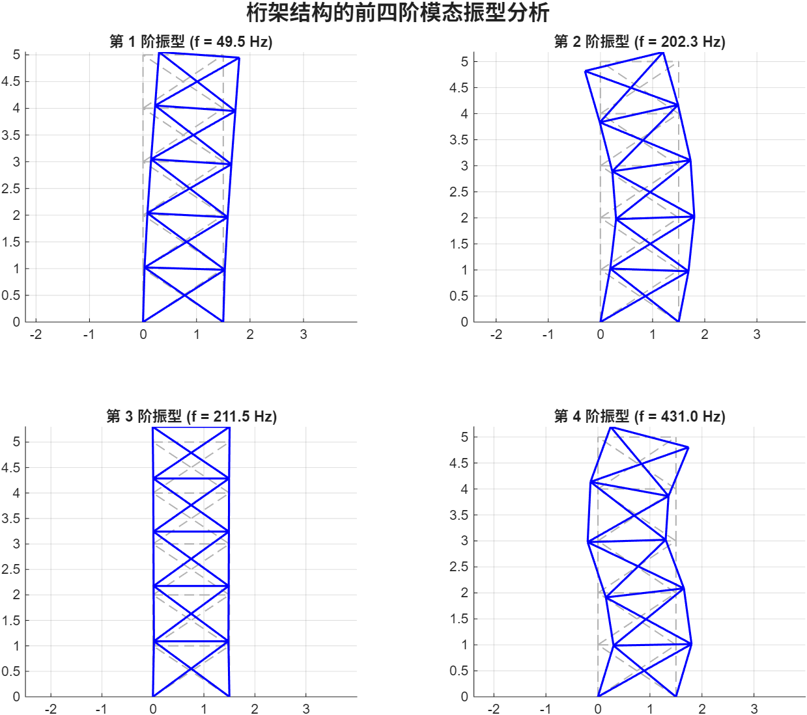

第26篇
5.2.6 运动方程与特征问题
我们定义拉格朗日量(Lagrangean)\(L\)为
其中\(T\)为动能(kinetic energy)
而\(\Pi\)为势能(potential energy)
在(5.56, b)中，\(\{ F\}\)为施加的节点力整体向量(global vector of applied nodal forces)。
哈密顿原理(Hamilton's principle)导出无阻尼系统的拉格朗日方程
利用标量对向量的求导法则，我们得到运动方程
对于自由振动，力向量为零，于是
寻求如下形式的解
其中\(\{ \phi \}\)为节点振动幅值向量(vector of nodal amplitudes of vibration)，我们得到广义特征值问题
其中\({\omega }_{r}^{2}\)为实特征值(real eigenvalues)，等于固有频率的平方，\(\{ \phi {\} }_{r}\)为实特征向量(real eigenvectors)。
可输出无阻尼桁架结构的固有频率和振型(mode shapes)。

图5.22
例5.9
计算图5.22所示系统的前四阶固有频率和振型，\(a\)其中所有20根杆的\(E = {200}\mathrm{{GPa}},\rho = {7850}\mathrm{\;{kg}}/{\mathrm{m}}^{3}\)和\(A = {100}{\mathrm{\;{mm}}}^{2}\)。
解:最低四阶固有频率(单位:Hz)分别为48.8、168.4、235.9和336.8。振型如图\({5.22}, b\)至\(e\)所示。
5.3 平面框架
框架是由刚性连接的构件(称为梁)组成的结构。梁是细长构件，用于承受横向荷载。它们通过刚性(节点)连接，具有确定的转动，并在传递力的同时，将弯矩从一个构件传递到另一个构件。
本节首先给出梁的有限元列式，然后将其推广到平面框架。倾斜的梁单元将称为框架单元。
5.3.1 均质梁的静力分析
本节考虑横截面相对于荷载平面对称的梁(图5.23)。忽略横向剪切变形。

图5.23
截面上任一点(距中性轴距离为\(y\))的轴向位移近似为
其中\(v\)为\(x\)处形心轴的挠度，\(\varphi = {v}^{\prime }\)为\(x\)处的截面转角(或斜率)。轴向应变为
截面上的正应力为
其中\(E\)为材料的杨氏模量(Young’s modulus)。
弯矩为截面上应力分布的合力
其中\({I}_{z}\)为截面绕中性轴\(z\)的截面二次矩(second moment of area)。
剪力(shear force)由下式给出
单位长度的横向载荷为
平衡微分方程为
5.3.2 有限元离散化
平面框架被划分为若干单元，如图5.24所示。每个节点具有三个自由度:两个线位移和一个转角。通常，节点\(i\)的自由度为\({Q}_{{3i} - 2},{Q}_{{3i} - 1}\)和\({Q}_{3i}\)，分别定义为沿\(X\)轴的位移、沿\(Y\)轴的位移以及绕\(Z\)轴的转角。
节点通过其在全局参考系\({XOY}\)中的坐标定位，单元连接由端节点索引定义。单元被建模为无剪切变形的均匀梁，且端部之间无载荷。其属性包括弯曲刚度(bending rigidity)\({EI}\)、单位长度质量(mass per unit length)\({\rho A}\)和长度(length)\(\ell\)。

图5.24
下文首先建立梁单元的形函数，然后在局部坐标系中计算单元刚度矩阵和质量矩阵，再转换到全局坐标系。随后将其扩展至结构尺寸，并简单相加得到全局未凝聚刚度矩阵和质量矩阵。施加边界条件后，计算缩减刚度矩阵和质量矩阵，并与阻尼矩阵一起用于动力分析。

图5.25
考虑如图5.25所示的倾斜梁单元\(a\)，图中亦给出了节点位移。
在局部物理坐标系中，沿梁方向的\(x\)轴相对于全局\(X\)轴倾斜角度\(\alpha\)。亦可采用内禀(自然)坐标系。
单元节点位移向量为
对应的单元节点力向量可写为
力\({f}_{2},{f}_{3},{f}_{5},{f}_{6}\)及对应位移\({q}_{2},{q}_{3},{q}_{5},{q}_{6}\)描述单元弯曲(图5.25, b)，而轴向力\({f}_{1},{f}_{4}\)及位移\({q}_{1},{q}_{4}\)描述单元拉伸(图5.25, c)。二者作用解耦，因此可分别计算各自的刚度矩阵和质量矩阵。
5.3.3 梁单元的静力形函数
对于端部间无载荷的均匀梁，\(p = 0\)，由方程(5.68)得\({\mathrm{d}}^{4}v/\mathrm{d}{x}^{4} = 0\)。积分四次，得到由三次多项式描述的挠度\(v\)
在(5.71)中，四个积分常数\({a}_{1},{a}_{2},{a}_{3},{a}_{4}\)可由几何边界条件确定，这些条件涉及每端的横向位移和斜率:
或者，横向位移也可以用节点位移表示为
其中\(\lfloor N\rfloor\)是包含形函数的行向量，这些形函数为三次多项式，称为Hermite多项式(Hermite polynomials)。
使用自然坐标，节点1处为\(r = - 1\)，节点2处为\(r = + 1\)，横向位移可写为
由于坐标通过关系式(5.22)变换
且\({\ell }_{e} = {x}_{2} - {x}_{1}\)为单元长度，因此方程(5.29)成立
利用链式求导法则
方程(5.74)变为
或
在(5.73)中，形函数行向量为
Hermite形函数为三次多项式，应满足表5.3给出的边界条件，其中撇号表示对\(r\)求导。
表5.3
| \(N_{1}\) | \(N_{1}^{\prime }\) | \(N_{2}\) | \(N_{2}^{\prime }\) | \(N_{3}\) | \(N_{3}^{\prime }\) | \(N_{4}\) | \(N_{4}^{\prime }\) | |
|---|---|---|---|---|---|---|---|---|
| \(r = -1\) | 1 | 0 | 0 | 1 | 0 | 0 | 0 | 0 |
| \(r = +1\) | 0 | 0 | 0 | 0 | 1 | 0 | 0 | 1 |
将上述条件施加于含四个任意常数的三次多项式，我们得到梁单元形函数在自然坐标(5.81)中的表达式，如图5.26所示。

图5.26
容易验证，在节点\(1, v = {q}_{2}\)和\(\frac{\mathrm{d}v}{\mathrm{\;d}r} = \frac{{\ell }_{e}}{2}{q}_{3}\)处，而在节点2处，
\(v = {q}_{5}\)和\(\frac{\mathrm{d}v}{\mathrm{\;d}r} = \frac{{\ell }_{e}}{2}{q}_{6}.\)
Matlab Demo
模态振型原理深度解析
参考例题5.9，代码在最后附上。忘记复杂的矩阵和方程，让我们从一个更直观的角度来理解模态振型。

核心比喻：结构的“音乐指纹”
想象一根吉他弦。当你拨动它时，它会发出一个特定的音高（基频），并以一个简单的弧形振动。这个最简单的振动形态，就是它的一阶振型。如果你用特殊技巧（如在弦的中点轻触并拨动），它可以发出更高频率的泛音，同时弦会呈现出两段、三段的复杂振动形态。这些形态，就是它的高阶振型。
模态振型，本质上就是复杂结构（如桁架塔）的“音乐指纹”。 它们是结构固有的、与生俱来的振动特性，由且仅由三个因素决定：
- 质量分布 (Mass Distribution)
- 刚度分布 (Stiffness Distribution)
- 边界条件 (Boundary Conditions / How it's supported)
它与外界施加的力在何处、有多大无关。无论你是用手推、用风吹，还是用地震波晃动它，这个“指纹”是不会变的。
振型原理的四个核心思想
-
振动的“偏好路径” (Preferred Paths of Vibration) 一个结构并不会随意振动。模态振型揭示了它在振动时最“省力”、最“自然”的变形方式。一阶振型通常是能量最低、最容易被激发的形态，就像让整个塔像一个倒立的钟摆一样整体晃动。更高阶的振型则需要结构内部产生更复杂的弯曲和拉伸，因此需要更高的能量才能被激发。
-
频率与形态的唯一绑定 (One-to-One Correspondence) 每一阶固有频率都唯一对应一个特定的振型。它们是不可分割的一对。你不能让结构以第一阶的频率（48.8 Hz）振动出第二阶的形态（S形弯曲）。低频对应着形态简单、宏观的整体运动；频率越高，振动的形态就越复杂、波长越短。
-
振动形态的“正交性” (Orthogonality of Mode Shapes) 这是一个非常深刻且关键的数学特性。你可以将不同阶的振型理解为相互独立的“基本动作”，就像空间中的X、Y、Z三个坐标轴一样。这个特性的巨大价值在于：结构在现实世界中任何复杂的、看似混乱的振动，都可以被精确地分解为这几个基本振型（基本动作）的线性叠加。 > 这就是“模态分析”的基石。它允许工程师将一个复杂的动力学问题，简化为几个简单振动模式的组合问题，极大地简化了分析。
-
节点与波腹 (Nodes and Anti-nodes) 在振型图中，位移为零或接近零的点称为振动节点（Node），而位移最大的点称为波腹（Anti-node）。理解这些位置至关重要。例如，如果你想给结构增加一个阻尼器来减震，你肯定会把它放在位移最大的波腹位置，而不是几乎不动的节点位置。
结合实例解读桁架塔的振型
-
一阶振型 (48.8 Hz - 整体摇摆模态)
- 原理理解: 这是最基础、能量最低的振动模式。整个塔像一根柔性的杆件，从底部到顶部发生整体的侧向弯曲。这是典型的抗风、抗震设计中最需要关注的模态，因为它最容易被低频的水平荷载（如风或缓慢的地震动）激发。
-
二阶振型 (168.4 Hz - S形弯曲模态)
- 原理理解: 结构呈现出一个反向弯曲的S形。塔的下半部分向一个方向摆动，而上半部分向相反方向摆动。这种模式需要比一阶模态更大的能量来激发，通常由更高频率的激励引起。
-
三阶振型 (235.9 Hz - 竖向伸缩模态)
- 原理理解: 这个振型非常特殊，它几乎没有水平位移，主要是竖杆的轴向伸缩和横杆的上下振动。这表明结构不仅会水平晃动，还有其自身的竖向振动偏好。这种模态可能会被竖向的激励（如设备振动）所激发。
-
四阶振型 (336.8 Hz - 高阶弯曲模态)
- 原理理解: 这是一个更复杂的弯曲形态，可以看作是更高频率的“甩鞭”动作。振动的波长变得更短，结构内部的变形也更剧烈。在通常的工程设计中，如此高阶的振型包含的能量较少，关注度低于前几阶，但在特定高频振动环境下也需要考虑。
总而言之，模态振型为我们提供了一双“透视眼”，让我们能够看清一个静态结构在动态世界中的内在行为逻辑。它不是振动本身，而是结构对振动激励做出响应的“可选模式清单”。
% MATLAB脚本: 求解例5.9 - 垂直桁架塔的自由振动分析
% (版本: 使用subplot合并输出)
clear; clc; close all;
%% 1. 定义模型输入属性 (统一使用国际单位制 SI Units)
% --------------------------------------------------------------------------
% 材料属性
E = 200e9; % 杨氏模量 (Young's Modulus), 单位: Pa (200 GPa)
rho = 7850; % 材料密度 (Density), 单位: kg/m^3
A = 100e-6; % 杆件横截面积 (Cross-sectional Area), 单位: m^2 (100 mm^2)
% 几何定义
width = 1.5; % 桁架宽度, 单位: m
height_per_bay = 1.0; % 每层高度, 单位: m
% 节点坐标矩阵 [x, y], 共12个节点
nodes = [
0, 0 * height_per_bay; % 节点 1 (固定)
width, 0 * height_per_bay; % 节点 2 (固定)
0, 1 * height_per_bay; % 节点 3
width, 1 * height_per_bay; % 节点 4
0, 2 * height_per_bay; % 节点 5
width, 2 * height_per_bay; % 节点 6
0, 3 * height_per_bay; % 节点 7
width, 3 * height_per_bay; % 节点 8
0, 4 * height_per_bay; % 节点 9
width, 4 * height_per_bay; % 节点 10
0, 5 * height_per_bay; % 节点 11
width, 5 * height_per_bay % 节点 12
];
% 单元连接关系矩阵 [节点i, 节点j], 共25个单元(杆件)
elements = [
% 竖杆 (10个)
1, 3; 3, 5; 5, 7; 7, 9; 9, 11;
2, 4; 4, 6; 6, 8; 8, 10; 10, 12;
% 横杆 (5个)
3, 4; 5, 6; 7, 8; 9, 10; 11, 12;
% 斜杆 (10个)
2, 3; 1, 4;
4, 5; 3, 6;
6, 7; 5, 8;
8, 9; 7, 10;
10, 11; 9, 12
];
% 系统参数
num_nodes = size(nodes, 1);
num_elements = size(elements, 1);
dof_per_node = 2;
total_dof = num_nodes * dof_per_node;
%% 2. 组装全局刚度矩阵和质量矩阵
% --------------------------------------------------------------------------
K_global = zeros(total_dof, total_dof);
M_global = zeros(total_dof, total_dof);
for e = 1:num_elements
node_i_idx = elements(e, 1);
node_j_idx = elements(e, 2);
node_i_coords = nodes(node_i_idx, :);
node_j_coords = nodes(node_j_idx, :);
dx = node_j_coords(1) - node_i_coords(1);
dy = node_j_coords(2) - node_i_coords(2);
le = sqrt(dx^2 + dy^2);
c = dx / le; s = dy / le;
ke_local = (E * A / le) * [1, -1; -1, 1];
me_local = (rho * A * le / 6) * [2, 1; 1, 2];
Te = [c, s, 0, 0; 0, 0, c, s];
Ke_global = Te' * ke_local * Te;
Me_global = Te' * me_local * Te;
dof_indices = [2*node_i_idx-1, 2*node_i_idx, 2*node_j_idx-1, 2*node_j_idx];
K_global(dof_indices, dof_indices) = K_global(dof_indices, dof_indices) + Ke_global;
M_global(dof_indices, dof_indices) = M_global(dof_indices, dof_indices) + Me_global;
end
%% 3. 施加边界条件
% --------------------------------------------------------------------------
fixed_dofs = [1, 2, 3, 4];
free_dofs = setdiff(1:total_dof, fixed_dofs);
K_reduced = K_global(free_dofs, free_dofs);
M_reduced = M_global(free_dofs, free_dofs);
%% 4. 求解特征值问题
% --------------------------------------------------------------------------
[eigenvectors, eigenvalues] = eig(K_reduced, M_reduced);
omega_sq = diag(eigenvalues);
[omega_sq_sorted, sort_idx] = sort(omega_sq);
eigenvectors_sorted = eigenvectors(:, sort_idx);
frequencies_hz = sqrt(omega_sq_sorted) / (2 * pi);
%% 5. 显示计算结果
% --------------------------------------------------------------------------
fprintf('桁架结构动力学分析结果:\n');
fprintf('--------------------------------------------------------------\n');
fprintf('计算得到的前四阶固有频率为:\n');
for i = 1:4
fprintf(' 模式 %d: %.1f Hz\n', i, frequencies_hz(i));
end
fprintf('--------------------------------------------------------------\n');
%% 6. 可视化振型 (使用 subplot 合并输出)
% --------------------------------------------------------------------------
% 将约减后的振型向量扩展回包含所有自由度的完整向量
mode_shapes_full = zeros(total_dof, length(free_dofs));
mode_shapes_full(free_dofs, :) = eigenvectors_sorted;
% 定义一个位移缩放因子
scale_factor = 0.3;
% 创建一个总的图形窗口
figure('Name', '前四阶模态振型 (First Four Mode Shapes)', 'Position', [100, 100, 1000, 800]);
% 循环绘制前4阶振型
for i = 1:4
% 在2x2的网格中选择第i个位置创建子图
subplot(2, 2, i);
hold on;
% 获取当前模式的位移向量并计算变形后坐标
displacement = mode_shapes_full(:, i);
nodes_deformed = nodes + scale_factor * reshape(displacement, 2, num_nodes)';
% 绘制原始结构 (灰色虚线)
for e = 1:num_elements
node_i = elements(e, 1);
node_j = elements(e, 2);
plot([nodes(node_i,1), nodes(node_j,1)], ...
[nodes(node_i,2), nodes(node_j,2)], 'k--','LineWidth', 1.0, 'Color', [0.7 0.7 0.7]);
end
% 绘制变形后的结构 (蓝色实线)
for e = 1:num_elements
node_i = elements(e, 1);
node_j = elements(e, 2);
plot([nodes_deformed(node_i,1), nodes_deformed(node_j,1)], ...
[nodes_deformed(node_i,2), nodes_deformed(node_j,2)], 'b-', 'LineWidth', 1.5);
end
title(sprintf('第 %d 阶振型 (f = %.1f Hz)', i, frequencies_hz(i)));
axis equal;
grid on;
hold off;
end
% 为整个窗口添加一个总标题
sgtitle('桁架结构的前四阶模态振型分析', 'FontSize', 16, 'FontWeight', 'bold');